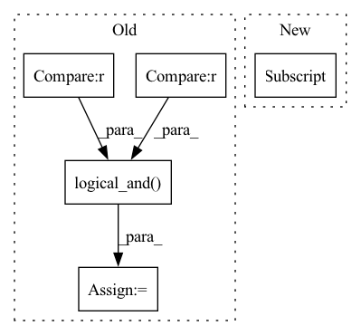

Pattern ID :33278
Before Change
// mask keypoints with cls and detection range
// mask = torch.norm(point_coords[:, :2], dim=1) < 57.6
mask = torch.logical_and(point_cls==4 , torch.norm(point_coords[:, :2], dim=1) < 57.6 )
xyz = point_coords[mask]
xyz_batch_cnt = xyz.new_zeros(batch_size).int()
xyz_batch_cnt[0] = len(xyz) //TODO Take care if the batch size is bigger than one, this should be adaptedAfter Change
def roi_grid_pool(self, batch_dict):
batch_size = len(batch_dict["record_len"])
rois = batch_dict["rcnn_label_dict"] ["rois"]
point_coords = batch_dict["processed_lidar"]["point_coords"]
point_features = batch_dict["processed_lidar"]["point_features"]
label_record_len = batch_dict["rcnn_label_dict"]["record_len"]In pattern: SUPERPATTERN
Frequency: 3
Non-data size: 5
Instances Fragment ID: 96015993
Project Name: derrickxunu/opencood
Commit Name: c7ecf237666697c93ad84b5d271c16e133ac8ccb
Time: 2022-04-01
Author: yunshuang.yuan@ikg.uni-hannover.de
File Name: opencood/models/sub_modules/roi_head.py
M Class Name: RoIHead
N Class Name: RoIHead
M Method Name: roi_grid_pool(2)
N Method Name: roi_grid_pool(2)
M Parent Class: nn.Module
N Parent Class: nn.Module
M File Name: opencood/models/sub_modules/roi_head.py
N File Name: opencood/models/sub_modules/roi_head.py
M Start Line: 164
M End Line: 184
N Start Line: 188
N End Line: 208
Before Change
for i in range(len(y)):
for class_id in [int(x) for x in torch.unique(y[i])]:
y_pred_i = (y_pred[i].argmax(0) == class_id) .numpy()
y_i = (y[i] == class_id) .numpy()
tp = np.logical_and( y_pred_i, y_i) .sum()
y_pred_i_count = y_pred_i.sum()
y_i_count = y_i.sum()
After Change
classes_ids = [0] if self.average == "micro" else torch.unique(y[i]).tolist()
for class_id in [int(x) for x in classes_ids]:
self._evals[class_id]["dice"] += dice[class_id]
self._evals[class_id]["count"] += 1
def compute(self):
Compute metric value. Fragment ID: 96015995
Project Name: deepchecks/deepchecks
Commit Name: 2d0e3893155e7b4294f49917fedc1eed7d2531cb
Time: 2022-09-14
Author: 92314933+nirhutnik@users.noreply.github.com
File Name: deepchecks/vision/metrics_utils/semantic_segmentation_metrics.py
M Class Name: MeanDice
N Class Name: MeanDice
M Method Name: update(2)
N Method Name: update(2)
M Parent Class: Metric
N Parent Class: Metric
M File Name: deepchecks/vision/metrics_utils/semantic_segmentation_metrics.py
N File Name: deepchecks/vision/metrics_utils/semantic_segmentation_metrics.py
M Start Line: 40
M End Line: 51
N Start Line: 59
N End Line: 74
Before Change
if ignore_index is not None:
target = jt.ternary(target==ignore_index,
jt.array(-1).broadcast(target), target)
mask = jt.logical_and(target >= 0 , target < output.shape[1] )
target = target.reshape((-1, ))
target = target.broadcast(output, [1])
target = target.index(1) == target
After Change
output = output.transpose((0, 2, 3, 1))
output = output.reshape((-1, c_dim))
target_weight = jt.ones(target.shape[0] , dtype="float32")
if weight is not None:
target_weight = weight[target]
if ignore_index is not None: Fragment ID: 96015989
Project Name: jittor/jittor
Commit Name: 4e1ee052f79560ade10fd0775eda46cc252f1f0b
Time: 2021-06-24
Author: lzhengning@gmail.com
File Name: python/jittor/nn.py
M Class Name: AnonimousClass
N Class Name: AnonimousClass
M Method Name: cross_entropy_loss(4)
N Method Name: cross_entropy_loss(3)
M Parent Class:
N Parent Class:
M File Name: python/jittor/nn.py
N File Name: python/jittor/nn.py
M Start Line: 196
M End Line: 212
N Start Line: 192
N End Line: 216